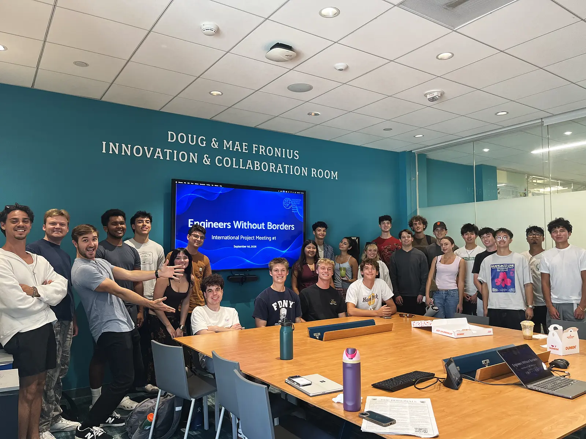
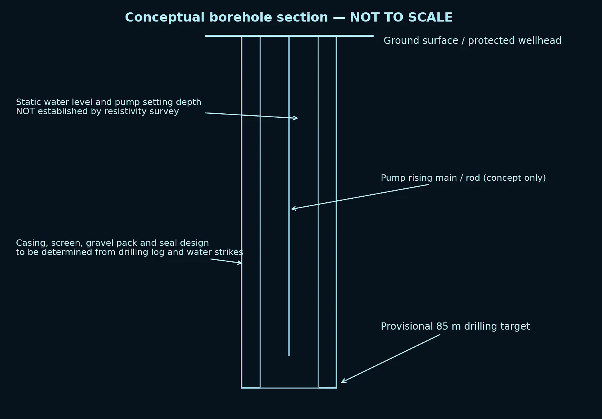
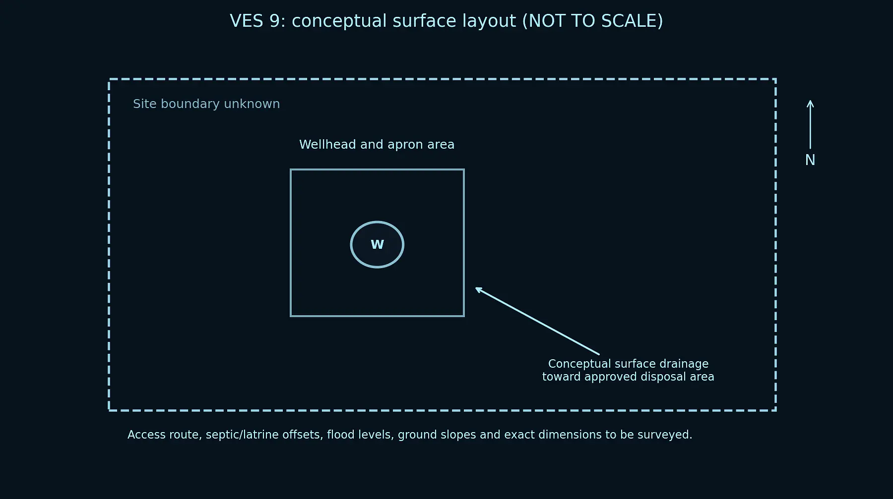
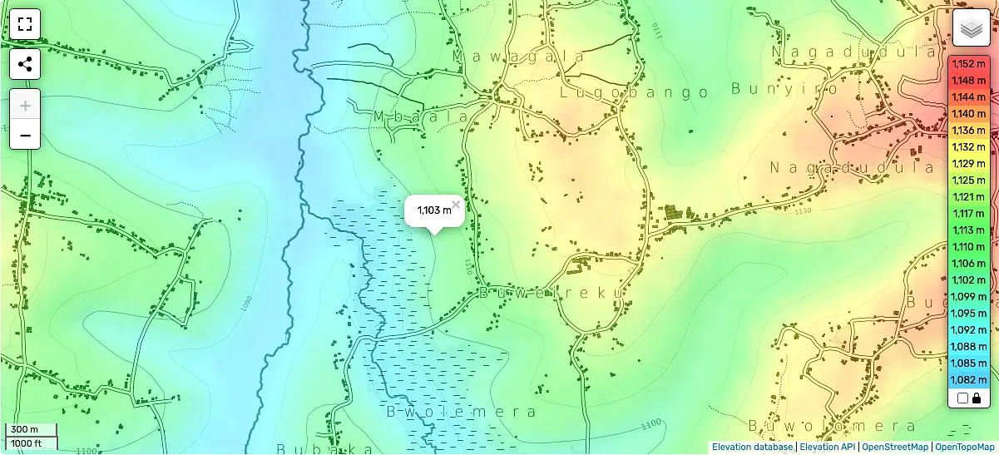
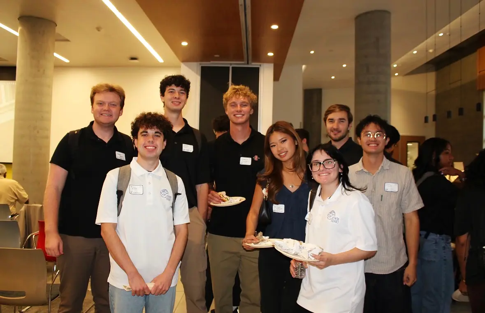
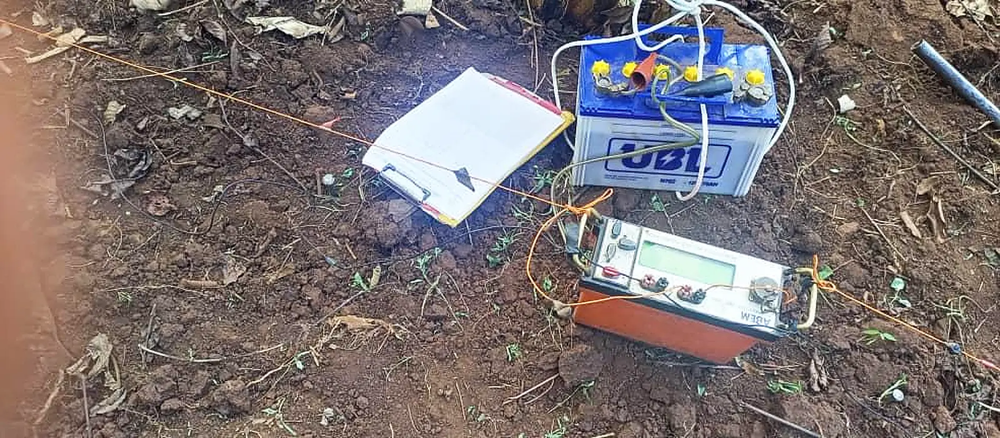
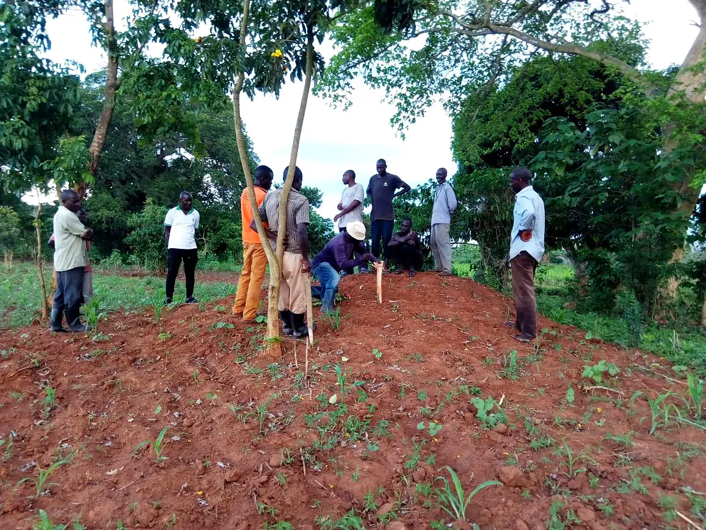
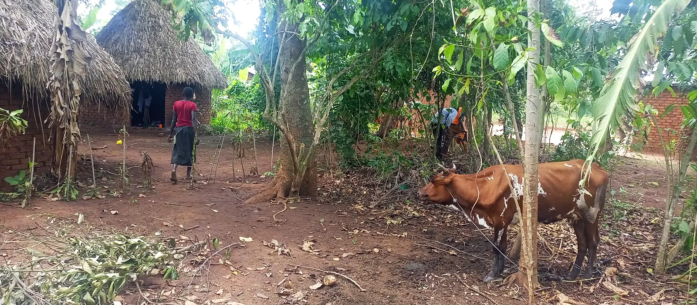

01Why this project matters
Mbaala is a farming village in Iganga District, in eastern Uganda: dirt roads, no electricity, and no protected water source. The community's water comes from a short, shallow well fed by rain runoff, which carries in whatever washes off the surrounding ground, including animal waste. Typhoid and salmonella come back again and again, and children miss school because they're either sick or carrying water.
When the community asked EWB for help, they didn't ask for anything fancy. They asked for water that won't make their kids sick, close enough that a trip doesn't take half the day. That's the standard I hold our design to.
02Rebuilding the project
When I stepped into leadership, the project was close to folding. It was five years old, had stalled, and was down to six active members, and the relationships with the village and with EWB-USA had gone quiet. I set out to rebuild it from the ground up.
- Grew the team from 6 to 30 consistent members and organized it under two team leads with clear responsibilities.
- Restructured our meetings around decisions and deliverables, and built the project timeline and team assignments that everyone works from.
- Rekindled our partnerships with the Mbaala community, our Ugandan NGO partner, and EWB-USA, re-establishing regular communication by email and Zoom across a 10- to 11-hour time difference.
- Wrote the Assessment Post-Trip Report and its drawing package: a 15-section technical document submitted to EWB-USA in September 2026 for review by professional engineers.
- Raised $8,000+ in new funding, bringing the project to $16,500 of its roughly $20,000 implementation goal.
- Now leading the alternatives analysis that will select the final design and put the chapter on track to plan, approve, and install the well by summer 2027.
03Assessing a site from halfway around the world
Sending students to Uganda for the assessment wasn't affordable, so we found another way: our in-country partners became our eyes on the ground. Their hydrogeologist ran a geophysical survey to find water-bearing rock, and local surveyors went door to door asking families how they get water today, what they pay, and what they'd need from a new system.
My job in the report was to turn all of that into an honest engineering picture: what the data supports, what it doesn't, and what still has to be confirmed before anyone drills. That list includes a pumping test, lab water-quality results, signed land agreements, and current contractor prices. Guessing isn't an option here; a dry or contaminated well costs a community money and trust it can't easily get back.
04Designing something that lasts
We're weighing a shallow hand-dug well against a deeper drilled borehole, and a manual hand pump against a solar pump. The leading concept is a drilled borehole with an India Mark II-style hand pump on a concrete apron with proper drainage.
A borehole costs more up front, but it reaches deeper, cleaner water than the runoff-fed source the village uses today. A hand pump needs no fuel or electricity, and local mechanics already know how to fix it. The most important part of the design isn't hardware, though: it's a Water User Committee with a maintenance plan, a spare-parts budget, and trained caretakers. Too many wells around the world sit broken because nobody planned for the day a seal wore out. We're designing so that day is just a routine repair.
05What's next
Once EWB-USA approves the design and the remaining funding is in place, our team plans to travel to Mbaala in summer 2027 to build the well alongside the community, then return about a year later to make sure it's still working and still trusted.
This project is the reason I care so much about getting the details right. Behind every number in that report are real families who are counting on us.
06Gallery








Click any image to enlarge. Technical drawings are shown in an inverted blueprint style.